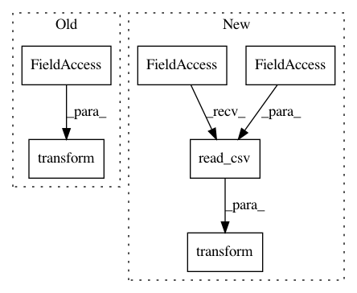

176d04bd5187c84f2cf9b89f84bbfe19d61c4c3d,tests/autokeras/adapters/input_adapter_test.py,,test_time_series_input_name_type_mismatch,#,246
Before Change
adapter = input_adapter.TimeseriesInputAdapter(
lookback=2, column_types=column_types
)
adapter.transform(x)
assert "Column_names and column_types are mismatched." in str(info.value)
def test_time_series_input_transform():
After Change
adapter = input_adapter.TimeseriesInputAdapter(
lookback=2, column_types=column_types
)
adapter.transform(pd.read_csv(utils.TRAIN_CSV_PATH))
assert "Column_names and column_types are mismatched." in str(info.value)
def test_time_series_input_transform():
In pattern: SUPERPATTERN
Frequency: 4
Non-data size: 6
Instances
Project Name: keras-team/autokeras
Commit Name: 176d04bd5187c84f2cf9b89f84bbfe19d61c4c3d
Time: 2020-08-01
Author: jin@tamu.edu
File Name: tests/autokeras/adapters/input_adapter_test.py
Class Name:
Method Name: test_time_series_input_name_type_mismatch
Project Name: keras-team/autokeras
Commit Name: 176d04bd5187c84f2cf9b89f84bbfe19d61c4c3d
Time: 2020-08-01
Author: jin@tamu.edu
File Name: tests/autokeras/adapters/input_adapter_test.py
Class Name:
Method Name: test_time_series_input_less_col_name